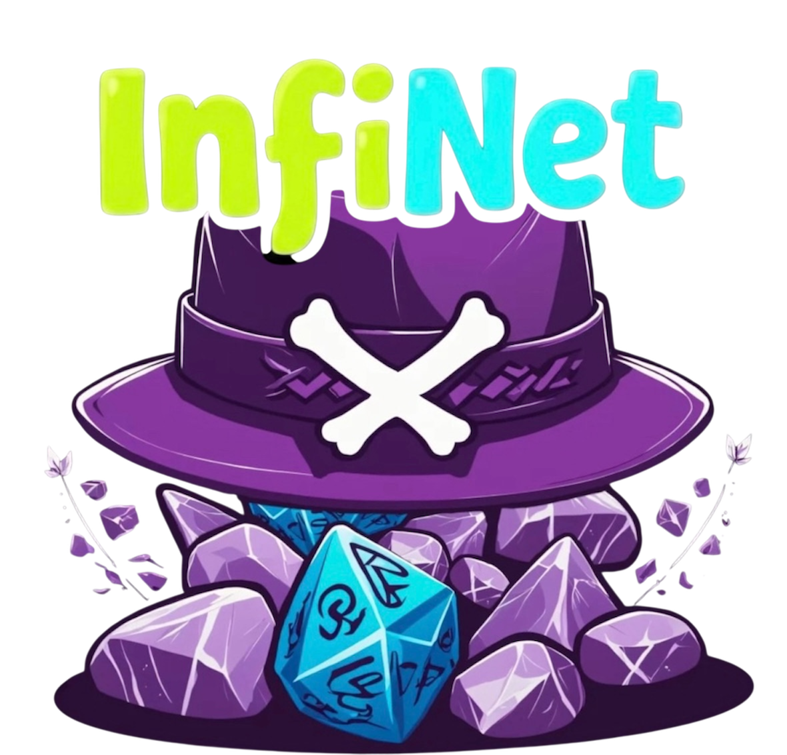

InfiNet Spectre (Robin) is a dark web OSINT tool for authorized research. Search, analyze, and summarize .onion sources with AI-powered refinement. Built for security researchers, threat intelligence, and journalists.
Enter InfiNet Spectre AppTor Browser Required
All sources discovered by InfiNet Spectre are hosted on the Tor network (.onion) and can only be accessed using the Tor Browser. Please install Tor to securely open and explore the results provided by the platform.
Download Tor Browser: https://www.torproject.org/
Search the Tor network, refine queries with AI, and get summarized results from .onion sites. InfiNet Spectre helps you conduct dark web research and open-source intelligence (OSINT) in a structured way. Sign in with email or Google to start.
Security researchers, threat intelligence teams, journalists, and authorized professionals who need a dark web search tool and onion search capability for legitimate research and cybersecurity analysis.
InfiNet Spectre (Robin) is a Dark Web OSINT tool that lets authorized researchers search, analyze, and summarize sources on the Tor network (.onion sites) with AI-powered refinement.
Yes. All sources are on the Tor network and can only be accessed with the Tor Browser. Install Tor from torproject.org to use the tool and open results.
Security researchers, threat intelligence teams, journalists, and authorized professionals who need to search and analyze dark web sources for legitimate OSINT and research purposes.